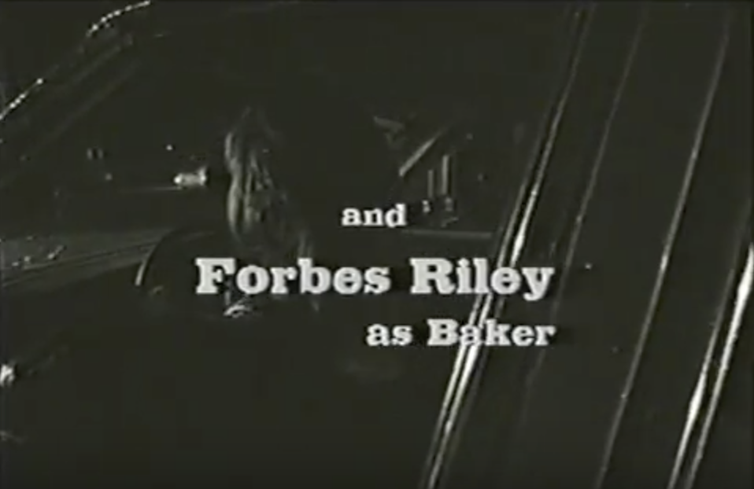
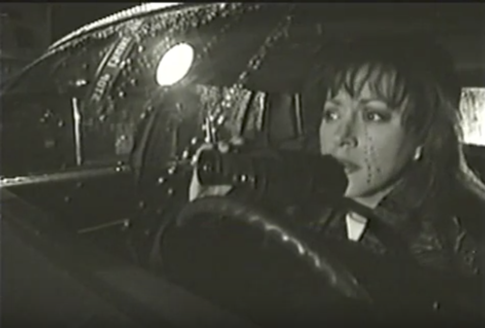

The Chase: Film Noir


The Chase was a fun film noir to shoot and work with talented actor Jay Richardson. The style, the clothes, the black and white – a great throwback to old Hollywood! film noir ˌfilm ˈnwär/noun-
a style or genre of cinematographic film marked by a mood of pessimism, fatalism, and menace. The term was originally applied (by a group of French critics) to American thriller or detective films made in the period 1944–54 and to the work of directors such as Orson Welles, Fritz Lang, and Billy Wilder.
-
a film marked by a mood of pessimism, fatalism, and menace.
What is noir?
Film Noir is one of Hollywood’s movements beginning in the early 1940s. Numerous screenplays inspired by American crime fiction were brought to the screen, primarily by European émigré directors who shared a certain storytelling sensibility: highly stylized, overtly theatrical, with imagery often drawn from an earlier era of German “expressionist” cinema. Fritz Lang, Robert Siodmak, Billy Wilder, and Otto Preminger, among others, were among this Hollywood vanguard.
During and immediately following World War II, movie audiences responded to this fresh, vivid, adult-oriented type of film — as did many writers, directors, cameramen and actors eager to bring a more mature world-view to Hollywood product. Largely fueled by the financial and artistic success of Billy Wilder’s adaptation of James M. Cain’s novella Double Indemnity (1944), the studios began cranking out crime thrillers and murder dramas with a particularly dark and venomous view of existence.
In 1946 a Paris retrospective of American films embargoed during the war clearly revealed this trend toward visibly darker, more cynical crime melodramas. It was noted by several Gallic critics who christened this new type of Hollywood product “film noir,” or black film, in literal translation.
Few, if any of the artists in Hollywood who made these films called them “noir” at the time. But the vivid co-mingling of lost innocence, doomed romanticism, hard-edged cynicism, desperate desire, and shadowy sexuality that was unleashed in those immediate post-war years proved hugely influential, both among industry peers in the original era, and to future generation of storytellers, both literary and cinematic.
-
a film marked by a mood of pessimism, fatalism, and menace.

Free · live on Zoom every Sunday
The Secret Pitch Formula
Join Forbes live for the Pitch Secrets Masterclass. Over 80,000 people have learned the 7-second hook, the three pitch patterns behind $2.5 billion in sales, and how to close without sounding salesy. Free, with a gift worth $500 for registering.
Sundays, 2 p.m. PT / 5 p.m. ET. Registration and the Zoom link are at pitchsecretstraining.com.